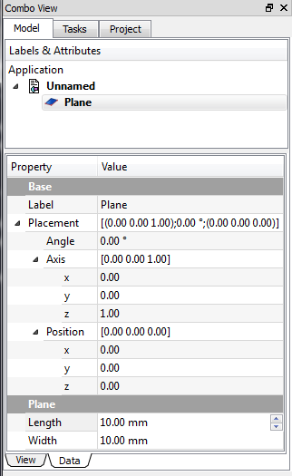

|
| Emplacement du menu |
|---|
| Part → Création de Primitives → Plan |
| Ateliers |
| Part, OpenSCAD |
| Raccourci par défaut |
| Aucun |
| Voir aussi |
| Creation de Primitives |
Description
Crée un plan paramétrique de 10 x 10 mm, avec les paramètres de position, longueur et hauteur. Par défaut, le plan est positionné aux coordonnées d'origine (0,0,0).

Utilisation
Le plan standard est créé le coin inférieur gauche au point d'origine 0,0,0. Pour modifier ces paramètres, ouvrez la section Emplacement et entrez les valeurs désirées dans les champs de saisie respectifs, ou cliquez sur la vue 3D et sélectionnez un point, les coordonnées du point sont enregistrées dans les champs. Dans le menu de Direction, vous pouvez également définir un vecteur standard (X, Y ou Z) perpendiculaire au plan, ou cliquez sur Défini par l'utilisateur ... pour ouvrir la boîte de dialogue qui vous permet de définir une direction différente (par exemple de direction 1, 0, -1 crée un plan incliné de 45° par rapport à X et Z).
les propriétés peuvent être modifiées dans "Vue combinée → Données"
Options
|  |
VueVous pouvez modifier les propriétés dans l'onglet Vue. DonnéesBase - Données de placement de l'objet
Plane - Paramètres spécifiques au plan
|
{kind=link}